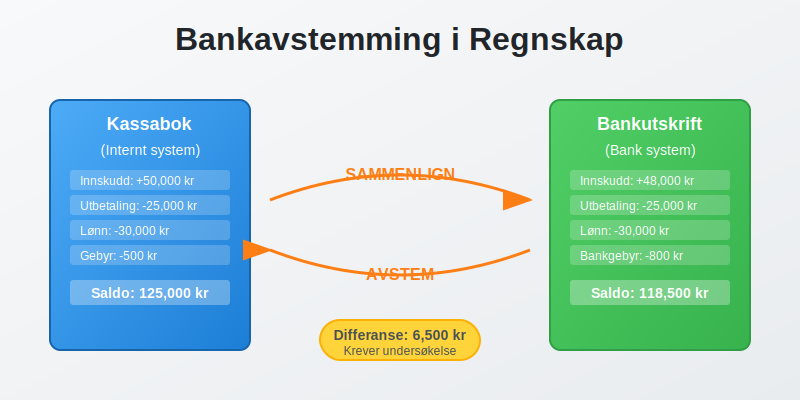
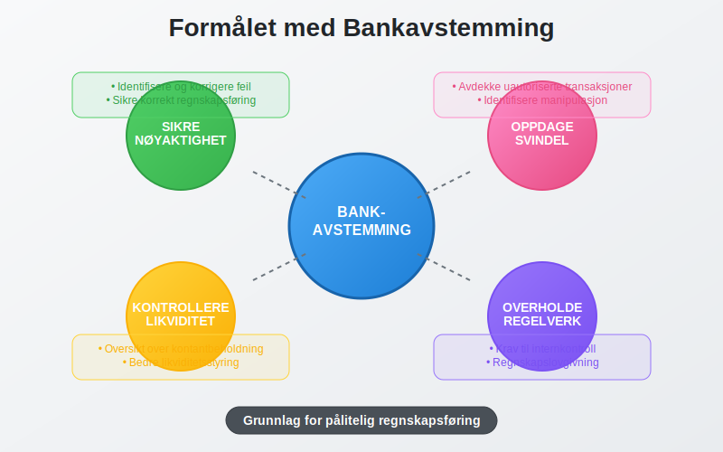
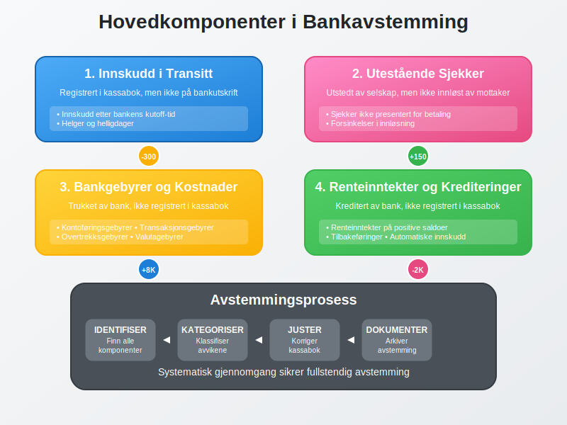
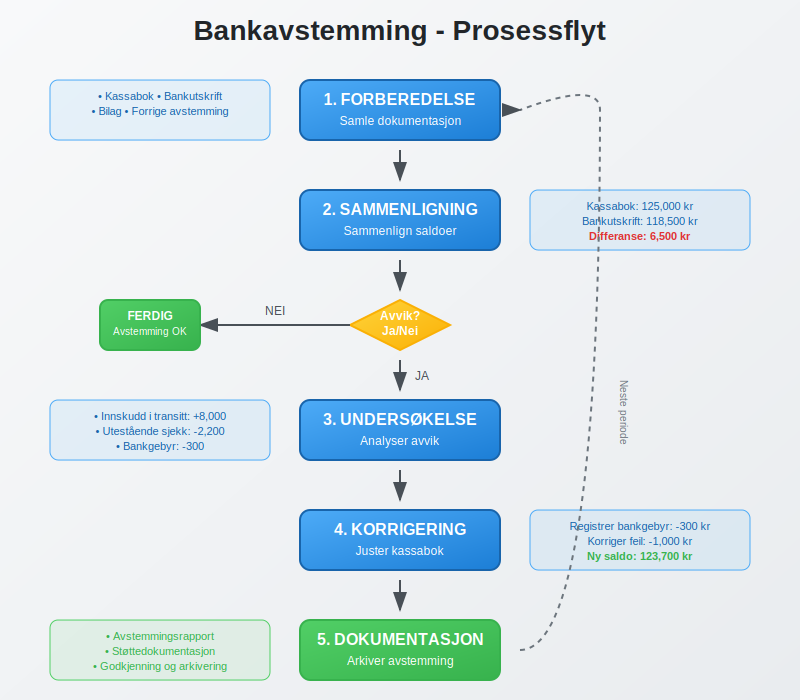
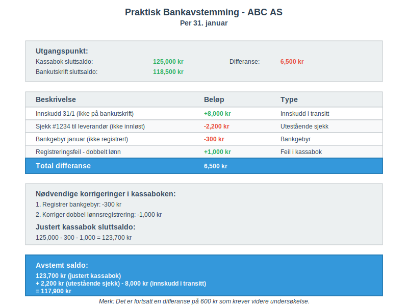
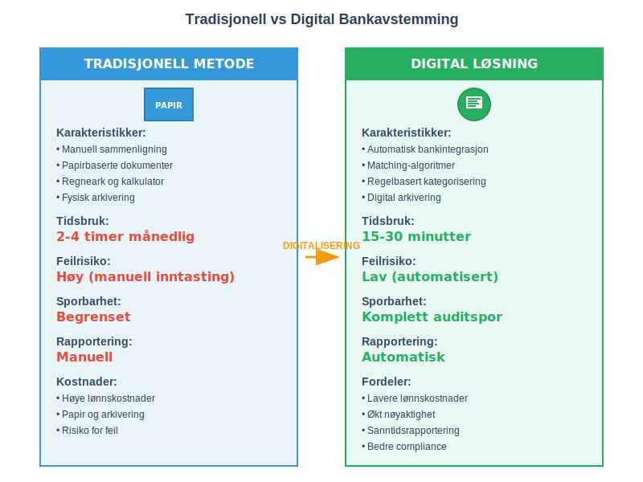
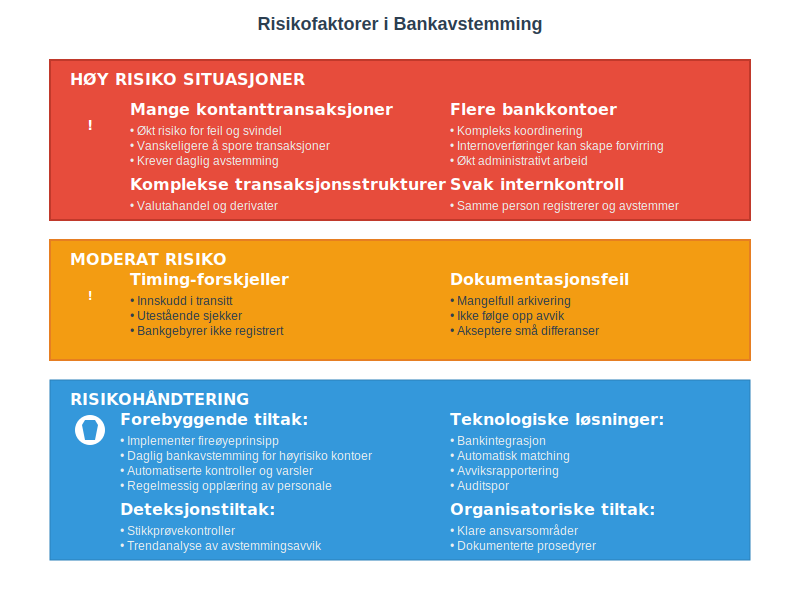
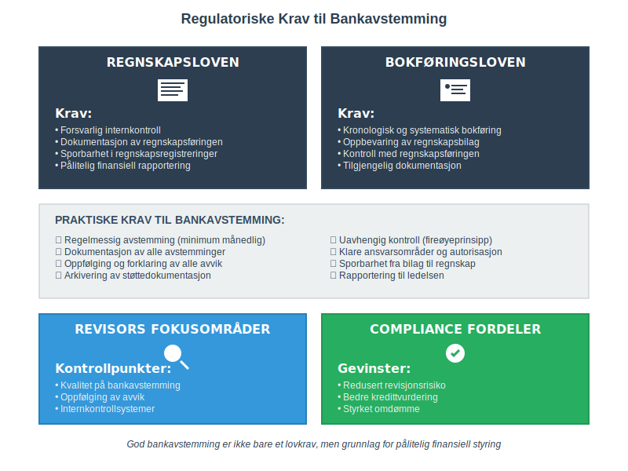
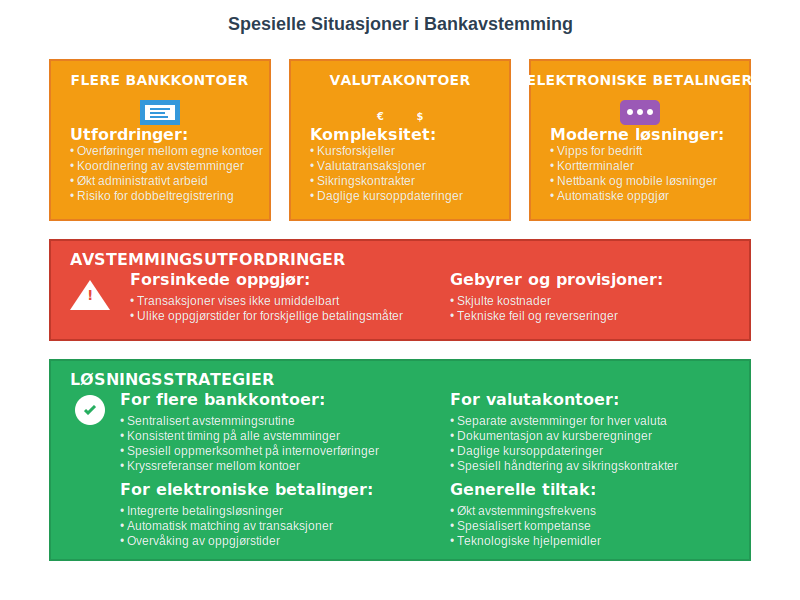
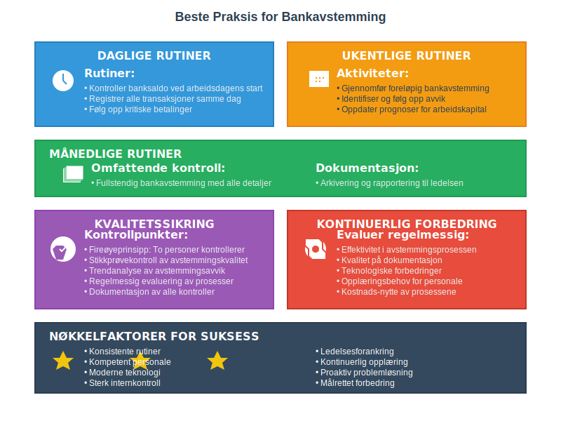

Bankavstemming er en av de mest kritiske og grunnleggende prosessene i regnskapsføring. Det innebærer å sammenligne og avstemme selskapets kassabok mot bankens kontoutskrift for å sikre at alle transaksjoner er korrekt registrert og at det ikke finnes uforklarlige avvik. Prosessen sikrer at bankinnskudd og andre banktransaksjoner er nøyaktig reflektert i regnskapet. Les mer om Bedriftsbank for praktisk bruk av bedriftsbank-tjenester i forbindelse med avstemming.
Se også: Hva er Betalingstjenestedirektivet (PSD2)?.
Se også Hva er Bedriftskonto? for en grundig gjennomgang av kontoene som avstemmes.

Hva er Bankavstemming?
Bankavstemming er prosessen med å kontrollere og bekrefte at selskapets interne kassabok stemmer overens med bankens offisielle kontoutskrift. Dette er en del av den bredere avstemmingsprosessen i regnskapsføring.
Formålet med Bankavstemming
- Sikre nøyaktighet: Identifisere og korrigere feil i regnskapsføringen
- Oppdage svindel: Avdekke uautoriserte transaksjoner eller manipulasjon
- Kontrollere likviditet: Få oversikt over faktisk tilgjengelig kontantbeholdning
- Overholde regelverk: Oppfylle krav til internkontroll og regnskapsføring

Hovedkomponenter i Bankavstemming
1. Innskudd i Transitt
Innskudd i transitt er beløp som selskapet har registrert som innskudd i kassaboken, men som ennå ikke vises på bankutskriften. Dette skjer typisk når:
- Innskudd gjøres sent på dagen etter bankens kutoff-tid
- Innskudd gjøres på helger eller helligdager
- Det er forsinkelser i bankens behandling av innskudd
2. Utestående Sjekker
Utestående sjekker er sjekker som selskapet har utstedt og registrert i kassaboken, men som ennå ikke er innløst av mottakeren og derfor ikke vises som trukket på bankutskriften.
3. Bankgebyrer og Kostnader
Banker trekker ofte gebyrer direkte fra kontoen uten forhåndsvarsel:
- Kontoføringsgebyrer: Månedlige eller årlige kontogebyrer
- Transaksjonsgebyrer: Gebyrer per transaksjon eller overføring
- Overtrekksgebyrer: Gebyrer ved overtrekk av konto
- Valutagebyrer: Gebyrer ved valutaveksling
4. Renteinntekter og Krediteringer
Banken kan kreditere kontoen med:
- Renteinntekter: Renter på positive saldoer
- Tilbakeføringer: Reversering av tidligere gebyrer
- Automatiske innskudd: Som lønn eller pensjonsutbetalinger

Bankavstemmingens Prosess
Steg 1: Forberedelse og Datainnsamling
Nødvendig dokumentasjon:
| Dokument | Kilde | Formål |
|---|---|---|
| Kassabok | Internt regnskapssystem | Selskapets registrerte transaksjoner |
| Bankutskrift | Bank | Bankens offisielle transaksjonshistorikk |
| Bilag og kvitteringer | Arkiv/Bilagsmottak | Dokumentasjon av transaksjoner |
| Forrige avstemming | Regnskapsarkiv | Utestående poster fra forrige periode |
Steg 2: Sammenligning av Saldoer
Start med å sammenligne sluttsaldoen i kassaboken med sluttsaldoen på bankutskriften:
Kassabok sluttsaldo: XXX,XXX kr
Bankutskrift sluttsaldo: XXX,XXX kr
Differanse: XXX kr
Steg 3: Identifisering av Avvik
Gå systematisk gjennom alle transaksjoner og identifiser:
- Transaksjoner i kassaboken som ikke finnes på bankutskriften
- Transaksjoner på bankutskriften som ikke finnes i kassaboken
- Beløpsforskjeller på samme transaksjoner
- Datodifferanser mellom registrering og gjennomføring
Steg 4: Kategorisering av Avvik
Normale avstemmingsposter:
- Innskudd i transitt
- Utestående sjekker
- Bankgebyrer ikke registrert
- Renteinntekter ikke registrert
Feil som krever korrigering:
- Registreringsfeil i kassaboken
- Dobbeltregistreringer
- Feil beløp eller kontoføring
- Manglende registreringer

Praktisk Bankavstemming - Eksempel
Eksempel: ABC AS - Bankavstemming per 31. januar
Utgangspunkt:
- Kassabok sluttsaldo: 125,000 kr
- Bankutskrift sluttsaldo: 118,500 kr
- Differanse: 6,500 kr
Avstemmingsanalyse:
| Beskrivelse | Beløp | Type |
|---|---|---|
| Innskudd 31/1 (ikke på bankutskrift) | +8,000 kr | Innskudd i transitt |
| Sjekk #1234 til leverandør (ikke innløst) | -2,200 kr | Utestående sjekk |
| Bankgebyr januar (ikke registrert) | -300 kr | Bankgebyr |
| Registreringsfeil - dobbelt lønn | +1,000 kr | Feil i kassabok |
| Total differanse | 6,500 kr |
Nødvendige korrigeringer i kassaboken:
- Registrer bankgebyr: -300 kr
- Korriger dobbel lønnsregistrering: -1,000 kr
Justert kassabok sluttsaldo: 125,000 - 300 - 1,000 = 123,700 kr
Avstemt saldo: 123,700 kr (justert kassabok) + 2,200 kr (utestående sjekk) - 8,000 kr (innskudd i transitt) = 117,900 kr
Merk: Det er fortsatt en differanse på 600 kr som krever videre undersøkelse.

Hyppighet og Timing av Bankavstemming
Anbefalt Hyppighet
Daglig bankavstemming:
- Selskaper med høy transaksjonsvolum
- Kontantintensive virksomheter
- Bedrifter med høy risiko for svindel
- Integrert del av dagsoppgjør rutiner
Ukentlig bankavstemming:
- Mellomstore bedrifter med moderat transaksjonsvolum
- Selskaper med etablerte internkontrollrutiner
Månedlig bankavstemming:
- Små bedrifter med lav transaksjonsvolum
- Minimum krav for de fleste selskaper
Beste Praksis for Timing
- Utfør avstemming så snart bankutskriften er tilgjengelig
- Ikke vent til månedslutt - gjør løpende avstemminger
- Sett faste datoer for avstemmingsarbeid
- Dokumenter alle avstemminger for revisjonsformål
Digitale Verktøy og Automatisering
Moderne Bankavstemming
Automatiserte løsninger:
- Bankintegrasjon: Direkte import av banktransaksjoner
- Matching-algoritmer: Automatisk sammenligning av transaksjoner
- Regelbasert kategorisering: Automatisk klassifisering av transaksjoner
- Avviksrapportering: Automatisk identifisering av uforklarlige avvik
Fordeler med digitalisering:
| Fordel | Tradisjonell metode | Digital løsning |
|---|---|---|
| Tidsbruk | 2-4 timer månedlig | 15-30 minutter |
| Feilrisiko | Høy (manuell inntasting) | Lav (automatisert) |
| Sporbarhet | Begrenset | Komplett auditspor |
| Rapportering | Manuell | Automatisk |

Populære Verktøy
Regnskapssystemer med bankintegrasjon:
- Visma Business/Visma.net
- Tripletex
- Fiken
- PowerOffice
Spesialiserte avstemmingsverktøy:
- Bankintegrasjonsløsninger
- Treasury management systemer
- Dedikerte avstemmingsplattformer
Utfordringer og Fallgruver
Vanlige Feil i Bankavstemming
1. Timing-forskjeller
- Ikke skille mellom permanente feil og timing-forskjeller
- Glemme å følge opp utestående poster fra forrige periode
2. Dokumentasjon
- Mangelfull dokumentasjon av avstemmingsprosessen
- Ikke arkivere støttedokumentasjon
3. Oppfølging
- Ikke følge opp uforklarlige avvik
- Akseptere “små” differanser uten undersøkelse
4. Ansvarsfordeling
- Samme person som registrerer transaksjoner utfører avstemming
- Mangel på uavhengig kontroll
Risikofaktorer
Høy risiko situasjoner:
- Mange kontantransaksjoner
- Flere bankkontoer
- Komplekse transaksjonsstrukturer
- Svak internkontroll

Internkontroll og Ansvarsfordeling
Segregering av Oppgaver
Prinsipp om arbeidsdeling:
| Funksjon | Ansvarlig | Kontrollør |
|---|---|---|
| Registrering av transaksjoner | Regnskapsfører | Regnskapssjef |
| Bankavstemming | Regnskapsmedarbeider | Regnskapssjef |
| Godkjenning av korrigeringer | Regnskapssjef | Daglig leder |
| Arkivering og dokumentasjon | Regnskapsavdeling | Intern revisor |
Kontrollmiljø
Etabler klare rutiner for:
- Autorisasjon: Hvem kan godkjenne korrigeringer
- Dokumentasjon: Krav til støttedokumentasjon
- Rapportering: Hvem skal informeres om avvik
- Oppfølging: Rutiner for uløste avstemmingsposter
Regulatoriske Krav og Compliance
Norske Regnskapsstandarder
Regnskapsloven krever:
- Forsvarlig internkontroll
- Dokumentasjon av regnskapsføringen
- Sporbarhet i regnskapsregistreringer
Bokføringsloven krever:
- Kronologisk og systematisk bokføring
- Oppbevaring av regnskapsbilag
- Kontroll med regnskapsføringen
Revisjonsaspekter
Revisors fokusområder:
- Kvalitet på bankavstemming
- Oppfølging av avvik
- Internkontrollsystemer
- Dokumentasjon og sporbarhet

Spesielle Situasjoner
Flere Bankkontoer
Utfordringer:
- Overføringer mellom egne kontoer
- Valutakontoer og kursforskjeller
- Koordinering av avstemminger
Løsninger:
- Sentralisert avstemmingsrutine
- Konsistent timing på alle avstemminger
- Spesiell oppmerksomhet på internoverføringer
Valutakontoer
Ekstra kompleksitet:
- Kursforskjeller mellom registrering og oppgjør
- Valutatransaksjoner som påvirker flere kontoer
- Sikringskontrakter og derivater
Spesielle hensyn:
- Daglige kursoppdateringer
- Separate avstemminger for hver valuta
- Dokumentasjon av kursberegninger
Elektroniske Betalingssystemer
Moderne betalingsløsninger:
- Vipps for bedrift
- Kortterminaler
- Nettbank og mobile løsninger
Avstemmingsutfordringer:
- Forsinkede oppgjør
- Gebyrer og provisjoner
- Tekniske feil og reverseringer

Beste Praksis og Anbefalinger
Etabler Robuste Rutiner
Daglige rutiner:
- Kontroller banksaldo ved arbeidsdagens start
- Registrer alle transaksjoner samme dag
- Følg opp kritiske betalinger
Ukentlige rutiner:
- Gjennomfør foreløpig bankavstemming
- Identifiser og følg opp avvik
- Oppdater prognoser for arbeidskapital
Månedlige rutiner:
- Fullstendig bankavstemming
- Dokumentasjon og arkivering
- Rapportering til ledelsen
Kvalitetssikring
Kontrollpunkter:
- Fireøyeprinsipp: To personer kontrollerer alle avstemminger
- Stikkprøvekontroll: Regelmessig kontroll av avstemmingskvalitet
- Trendanalyse: Følg utviklingen i avstemmingsavvik over tid
Kontinuerlig Forbedring
Evaluer regelmessig:
- Effektivitet i avstemmingsprosessen
- Kvalitet på dokumentasjon
- Teknologiske forbedringer
- Opplæringsbehov

Konklusjon
Bankavstemming er en fundamental regnskapsprosess som sikrer nøyaktighet og pålitelighet i finansiell rapportering. En systematisk tilnærming til bankavstemming:
- Reduserer risiko for feil og svindel
- Forbedrer likviditetsstyring og kontantprognoser
- Sikrer compliance med regnskapsstandarder
- Styrker internkontrollen i organisasjonen
Ved å implementere robuste rutiner, utnytte moderne teknologi og opprettholde høy kvalitet på dokumentasjon, kan bedrifter oppnå effektiv og pålitelig bankavstemming som støtter god regnskapsføring og finansiell styring.
Husk: Bankavstemming er ikke bare en teknisk øvelse, men en kritisk kontrollmekanisme som beskytter selskapets finansielle integritet og støtter informerte forretningsbeslutninger.